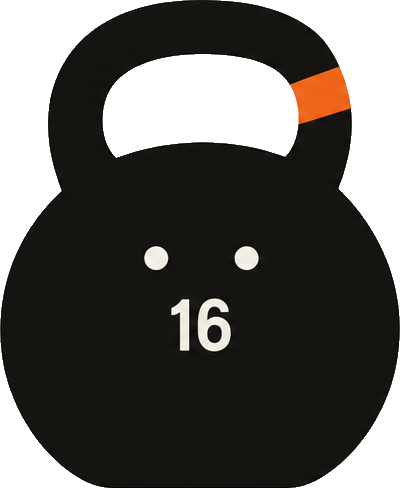
G1
Плоский геометрический
Округлое тело, плавная дуга ручки и один небольшой фрагмент Ember-ленты.
Три характера одной формы, два дуэта и четыре сцены с людьми. Спокойный спутник тренировок с числом на животе.

Округлое тело, плавная дуга ручки и один небольшой фрагмент Ember-ленты.
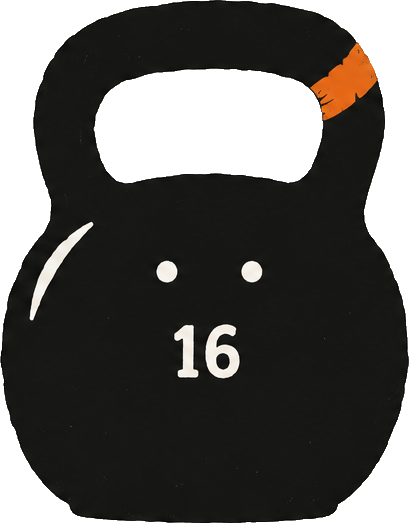
Слегка неровный край, светлый штрих на плече и след печатной фактуры.
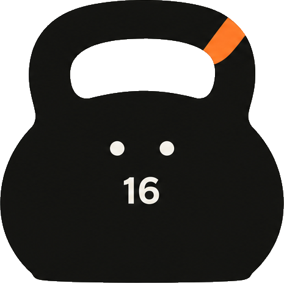
Более широкое тело с плоским основанием и короткой толстой ручкой.
На каждом листе — герой, приветствие, разминка, мах, отдых, ожидание и подскок. Ручка, число и глаза остаются частью конструкции.
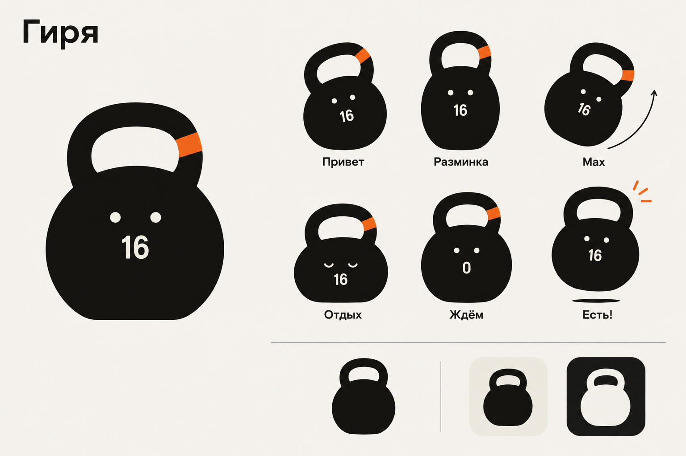
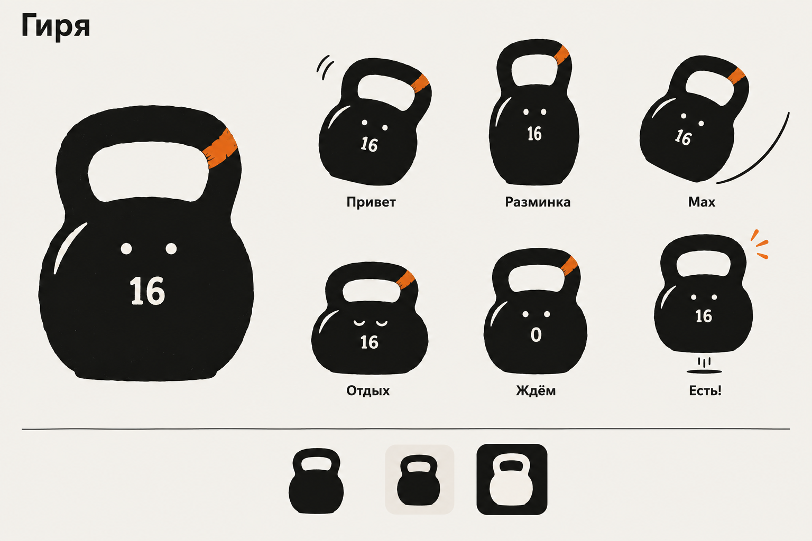
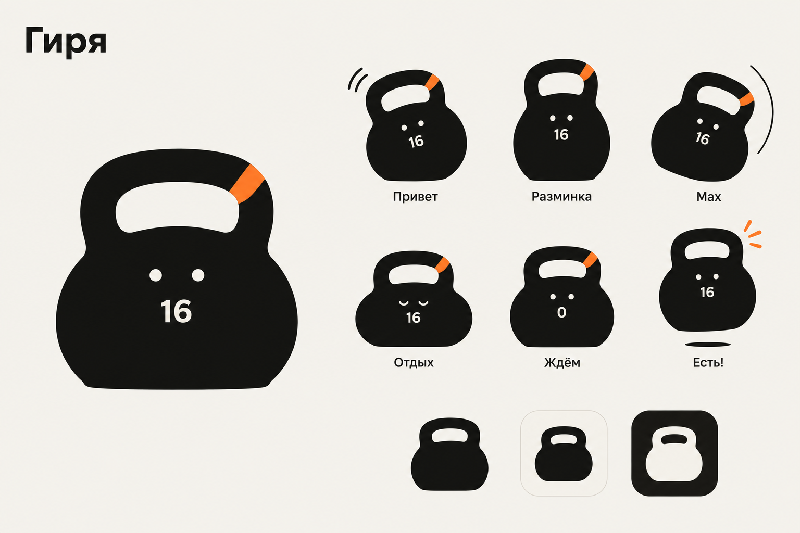
Две гири одного размера и с одинаковым числом 16. Знакомство, совместная тренировка и отдых.
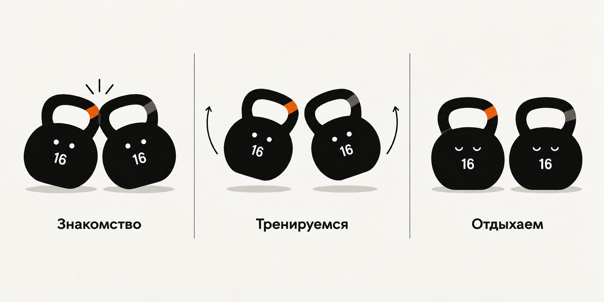
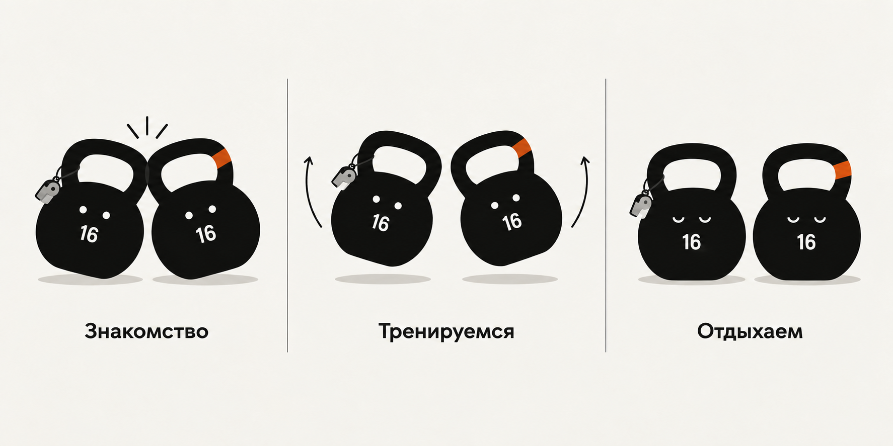
Тренер показывает движение, клиент занимается дома по плану. Гиря стоит рядом. На каждую сцену приходится одна маленькая Ember-деталь.
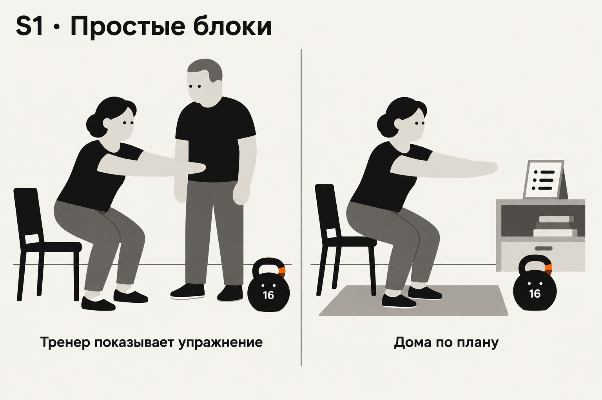
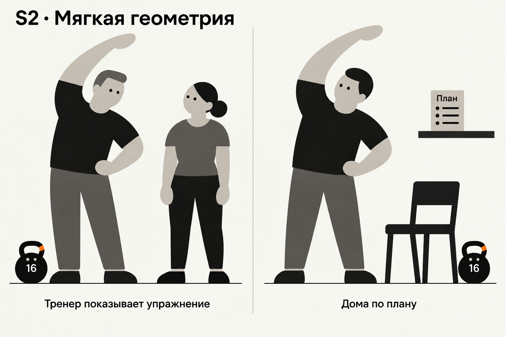
Герои вырезаны из листов и уменьшены Pillow Lanczos. Ниже — отдельные PNG в натуральных размерах: 16, 24, 48 и 96 px. Силуэты построены из тех же контуров, без глаз, числа и повязки.
Герой · бумага / белый
Только силуэт · бумага / белый
Иконка 60 × 60
Герой · бумага / белый
Только силуэт · бумага / белый
Иконка 60 × 60
Герой · бумага / белый
Только силуэт · бумага / белый
Иконка 60 × 60
На главной — в блоке пакета. В программе — рядом с пустым состоянием. В прогрессе — рядом с посещениями за неделю. Переключатель наверху показывает исходные снимки.
Число зависит от контекста. На листах 16 — число персонажа. В пакете 7 — фактический остаток. В пустом состоянии 0; в прогрессе 0 — отсутствие отмеченных посещений на этой неделе.
Эти наложения — исследование размещения, не реализованная функция. Число на гире не заменяет подписи и данные интерфейса.
Округлое тело, плавная дуга ручки и один небольшой фрагмент Ember-ленты.
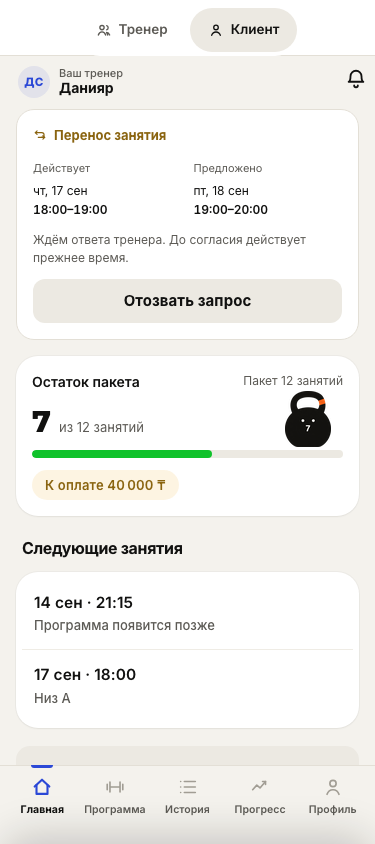
Слегка неровный край, светлый штрих на плече и след печатной фактуры.
Более широкое тело с плоским основанием и короткой толстой ручкой.
Просвет ручки сохраняется при уменьшении. Смысл числа, узнаваемость поз и влияние чёрной массы на внимание пока не проверялись с пользователями.